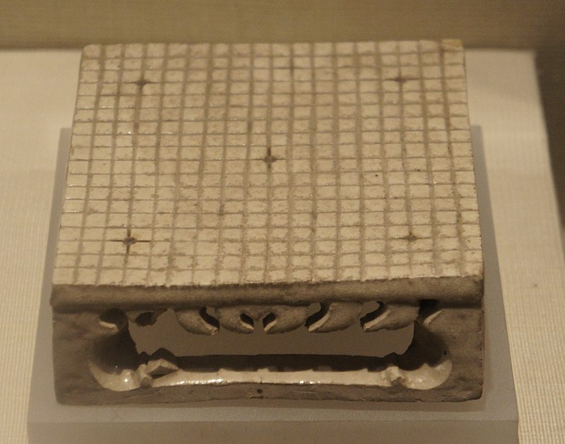
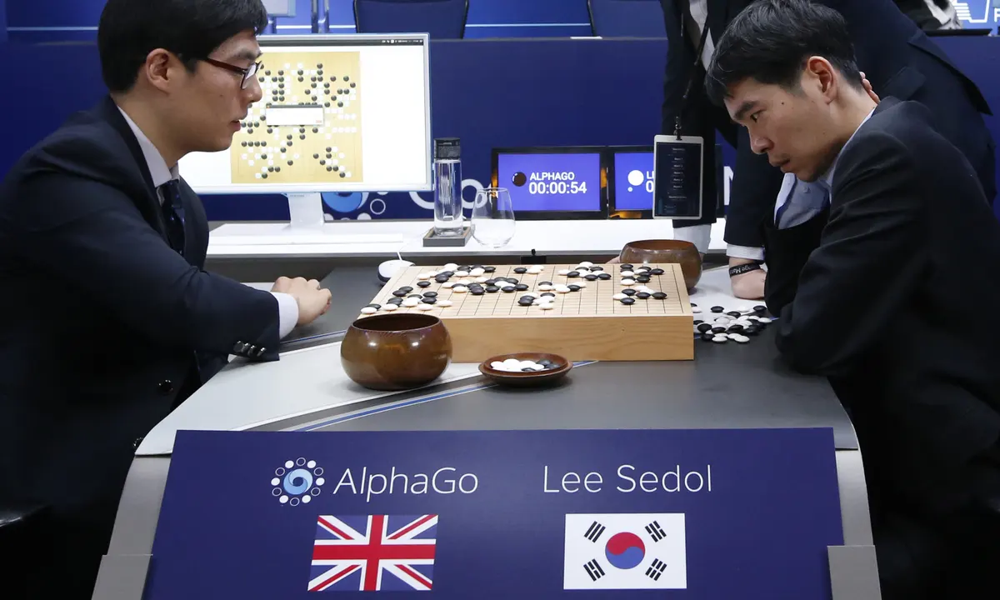

Origins
Though the exact origins of Go are still debated today, most people agree that the game was created in China some 4000 years ago. The board originally started out as a 17x17 board, but became a 19x19 board by around the year 1000. In China, Go was known as one of the four arts that a Chinese scholar gentlemen was responsible for proficency. Unforunately, few records of actual games were recorded, so we do not know much about their playstyles.
Go in Other Countries
By the 8th, the game had spread to countries like Japan and Korea where its popularity quickly blossomed. Not only did each country have a different name for the game (China: Weiqi, Korea: Baduk, Japan: Igo), they also began to form distinct playstyles that were unique from one another. In Japan, 4 Go houses(schools) were formed. They were the Honinbo, Hayashi, Inoue, and Yasui. The Honinbo was the strongest school, and the Honinbo tournament, which is still played today, is named after them. In Korea, players played a different style of Go. At the start of the game, each player would play 8 stones consecutively, rather than alternating turns.
Go Today
In 2016, Deepmind's AlphaGo AI engine defeated Lee Sedol 4-1, generally regarded as the best international Go player at the time. This was the beginning of the AI era for Go. Thousands of years of theory suddenly became all but obsolete. People quickly abandoned traditional openings and attacks in favor of AlphaGo's novel strategies. Since then, there has not been any other human capable of beating Deepmind's AI engine. The entire Go community changed, in some ways good and some ways bad.
 AlphaGo vs Lee Sedol
Photograph: Lee Jin-man/AP
Meijin Tournament
The Meijin tournament is sponsored by the Asahi newspaper, and has prize money of ¥30,000,000. Here is a table of the recent winners.
| Year | Winner | Score |
| 2015 | Iyama Yuta | 4-2 |
| 2016 | Shinji Takao | 4-3 |
| 2017 | Iyama Yuta | 4-1 |
| 2018 | Cho U | 4-3 |
| 2019 | Toramaru Shibano | 4-1 |
| 2020 | Iyama Yuta | 4-1 |
| 2021 | Iyama Yuta | 4-3 |
| 2022 | Toramaru Shibano | 4-3 |